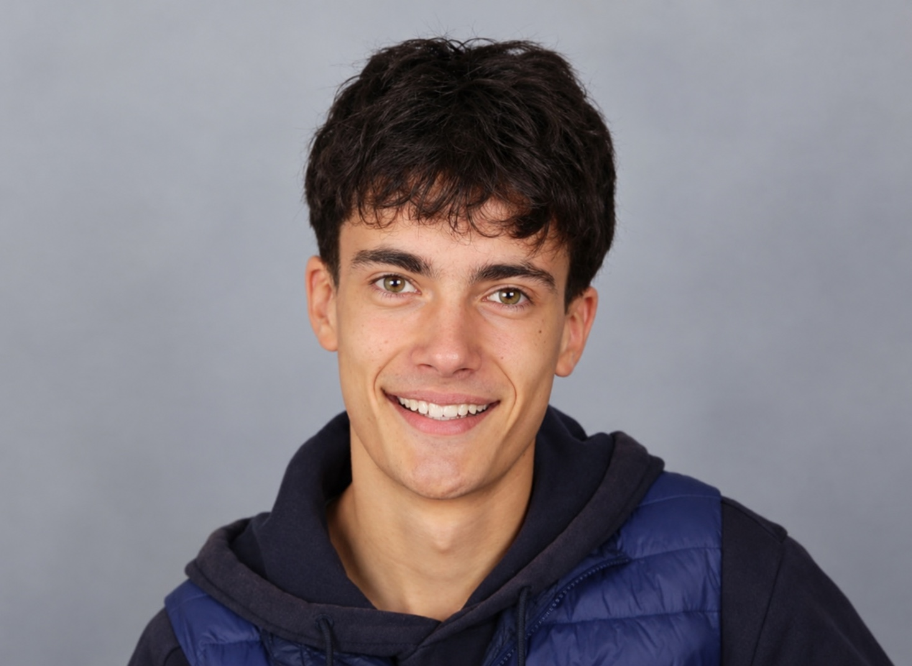
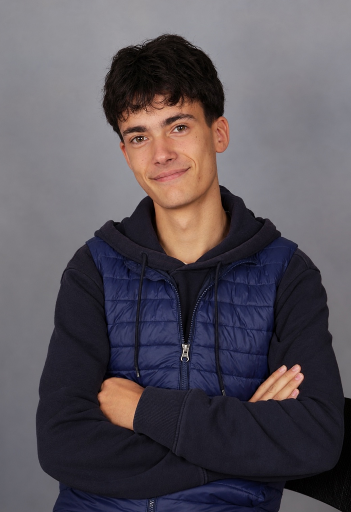
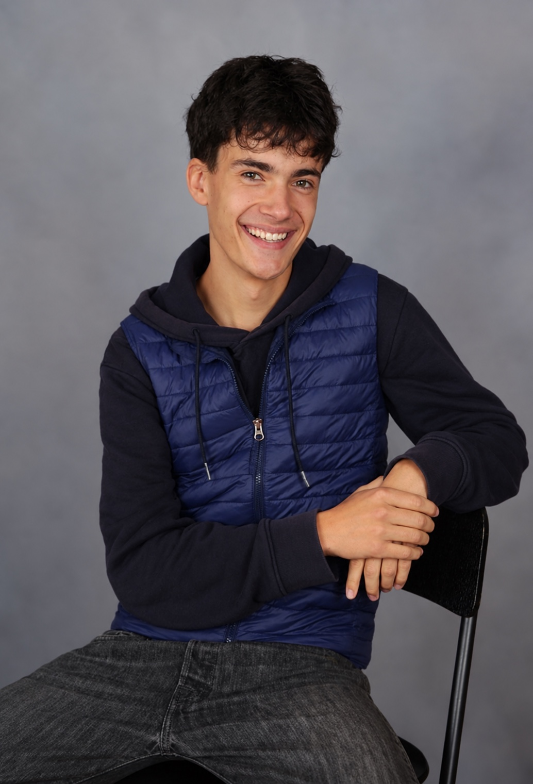

Die Menschen hinter Erlebnis Egerland
Lino
Schwichtenberg
17 Jahre · im Projektjahr 2026
Meine Aufgaben
- Recherche
- Zeitzeugengespräche
- Sponsoring
- Pressearbeit
- Social Media
- Website
Meine Motivation
Warum ich dabei bin
Mich interessiert an unserem Seminar besonders die Geschichte hinter den Menschen: Was bedeutet es, seine Heimat verlassen zu müssen? Und wie gelingt es, nach solchen Erfahrungen wieder aufeinander zuzugehen?
Mit unserem Film und dem Magazin möchte ich dazu beitragen, dass diese Erinnerungen erhalten bleiben und auch Menschen in unserem Alter erreichen. Dabei finde ich es spannend, selbst nachzufragen, Menschen kennenzulernen und gemeinsam etwas zu gestalten, das über den Unterricht hinausgeht.

